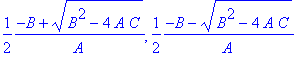

First, a word about exponential functions. Maple doesn't understand e^x, since it
doesn't know what "e" is. To indicate an exponential function, you need to type
exp(x). For example, here's how you would plot 5e^(2x).
> plot(5*exp(2*x),x=0..3);
Note the use of the "*" to tell Maple that you want to multiply things together.
Ok. Now let's see how to make Maple solve equations for you. The general form
of Maple's solve command is: solve(equation,x). This will solve the equation for
the variable x.
For example, suppose you want to do problem 5 from section 1.7 on p. 44. Here's how
to do it:
> solve( 10^(x+3) = 5*exp(7-x), x);
The "solve" command, shown above, will give you the answer symbolically. I.e., it'll leave
ln(200) as ln(200). If you want to get a number instead of symbols, use the fsolve command.
The "f" stands for Floating point; a floating point number is a decimal like 1.00 or 3.1415.
Anyway, the syntax for the fsolve command is the same as for the solve command:
> fsolve( 10^(x+3) = 5*exp(7-x), x);
Pretty cool, eh? I bet your little graphing calculator can't do that!
Here's one more example. Maple can solve some pretty yucky equations amazingly quickly.
> fsolve( 4*x^4 - 13*x^3 + 7*x^2 + 3*x - 2 = 0 , x);
Note how Maple quickly finds all four solutions to this quartic equation. (Ever try
to solve a quartic equation by hand? It takes a long time -- probably at least 15 minutes.
And that's assuming that you don't make any mistakes. Maple can do it in under a
second.)
Here's yet another example:
> solve(A*x^2 + B*x + C = 0 , x );

This should look familiar; it's just your old friend the quadratic formula. In addition to
giving numerical answers, Maple can also do algebra and work symbolically. For
example, Maple can also spit out the Cubic Formula. The output is too long
to include here -- try it for yourself if you're curious.
> solve(B*x^3 + C*x^2 + D*x + E, x);
>